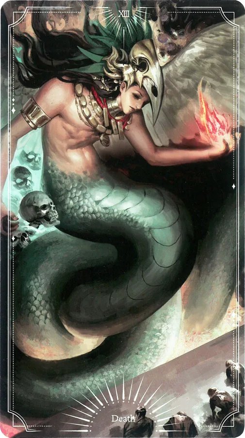

Overview
Death went mad, but also became stronger! Even deities can go mad? What a horrifying sentence!
Roselle's Diary, Book 1, chapter 217
Salinger or Death was a Sequence 0 God of the Death Pathway. "He" was a Subsidiary God of the Annihilation Demonic Wolf Flegrea and later the Phoenix Ancestor Gregrace, known as the God of the Dead in the Second Epoch. "He" then founded and controlled the Balam Empire and was known as the Underworld Emperor. "He" later used the River of Eternal Darkness distributary to fuse with the Red Priest Pathway Uniqueness to create a brand new Great Old One path. This led to "Him" becoming a Half Great Old One, although "He" went mad as a result.5 1
Salinger perished at the end of the Pale Era of the Fourth Epoch, at the hands of the Seven Orthodox Gods.
Honorific Name
The Essence of Death; Lord of the Dead; Final Home to all Living-beings (死亡的本质， 亡者的君主， 所有生灵最后的归宿)
Symbol
"His" symbol is the Inverted Mausoleum.
Appearance
In the Rose Redemption Mural: A middle-aged man with facial features resembling the natives of the Southern Continent.2
Personality
Antigonus found Salinger to be gloomy and solitary, exuding a rotting and disgusting aura.7
Because "He" was originally a Subsidiary God with mixed characteristics (Death Sequence 2 + Darkness Sequence 2),8 even after expelling the characteristic, there would still be severe aftereffects.9 "His" mental state was never particularly good.10
History
Second Epoch
In the Second Epoch, "He" was known as the God of the Dead Salinger and was a Subsidiary God of the Annihilation Demonic Wolf Flegrea, but after Flegrea's death, "He" turned to the Phoenix Ancestor Gregrace.11 "He" was initially a mix of Death Death Consul and Darkness Servant of Concealment.12
When Gregrace perished, "She" turned into fragments scattered across the Southern Continent.13 When Salinger acquired the Pale Emperor characteristic, it had already changed hands twice, roughly around the year 24xx, which was over a hundred years before the end of the Second Epoch.14 15
Third Epoch
In the Third Epoch, "He" joined Rose Redemption as a Kings of Angels of the Subsidiary Gods faction under the Evernight Goddess, which eventually caused Ancient Sun God's death.2Book 1, chapter 111716
Fourth Epoch
During the beginning of the Fourth Epoch, "He" advanced to Sequence 0 and became known as Death. At that time, all deities had "Their" own countries in poorer places and acknowledged the first Solomon Empire and the Black Emperor Solomon's rule over the Northern Continent in order to fight against opposing factions. Death had a conflict with the Evernight Goddess and the God of Combat. For the sake of balance, the Black Emperor also didn't attack the Southern Continent, and allowed Death to unite the plains and the ancient forest to build the Balam Empire.17
"He", along with the Black Emperor Solomon, Night Emperor Trunsoest, and Blood Emperor Tudor, participated in the War of the Four Emperors. In Tudor's last moment, "He" wanted to forcibly complete the merger with the Mirrored Original Creator, using this to pull all other Sefirot from the Western Continent, dragging the entire world to die, waiting for the Creator's symbolic manifestation in death. The Primordial Demoness decided to let "Him" die for a while, and then resurrect "Him" later. "She" dealt Tudor the critical blow, while Death completed "His" life's culling, sending "His" soul into the River of Eternal Darkness.3Book 2, chapter 1107 After the War of the Four Emperors, Death was said to have benefited the most from the war, gaining the the Uniqueness of Red Priest.
During the Conflicts of the Seven Gods, Death relied on a distributary of the River of Eternal Darkness to forcibly accommodate the the Uniqueness of Red Priest to create a brand new Great Old One path. This has the influence of the True Creator, as well as the Celestial Worthy of Heaven and Earth for Blessings who had once accommodated the River of Eternal Darkness which included the Death Pathway.18 After over a century of "digestion",4Book 1, chapter 217 "He" went mad, but also became a lot stronger, even stronger than the War of the Four Emperors era's True Creator. "He" wasn't able to resist the desire for converging with the Twilight and Evernight pathways,1 and then wanting to devour a certain few gods from among the Seven Gods.4 1Book 1, chapter 1369
In the middle of this era, the Primordial Demoness approached Death for an alliance. "She" wanted to manipulate the half-mad Death to collect the Blood Emperor's corpse in Fourth Epoch Trier, merge it with "Himself", and manipulate "Him" to touch the Special Mirror Worlds to resurrect the Blood Emperor.19 However, Death's forced accommodation of the the Uniqueness of Red Priest caused an aberration in the Mirrored Original Creator, producing a certain self-awareness, which negatively affected "Her" state.3
- The reason for the Celestial Worthy's influence which eventually led to this aberration was to prevent the Primordial Demoness' plan regarding the Mirrored Original Creator. This is because if there were no mutation, and "She" continued down the path, succeeding would make "Her" the Mirrored Original Creator; failing would still birth the Mirrored Original Creator. With the aberration, now both sides have formed a certain balance until The Apocalypse, leading to new changes.20
Some time after Death went mad, "He" interacted with the Underworld Daoist, who guarded the River of Eternal Darkness and the Blood Emperor's afterimage. For some reason, "He" agreed to Naboredisleys request for help, causing "His" Abomination corpse to slumber in a special dream. Therefore, be it the Underworld Daoist or Naboredisley's corpse, even if they only had their instincts left, they would still treat the Eggers Family's bloodline specially.21
In the Pale Era, Death and the Primordial Demoness joined forces to wreak havoc and create a catastrophe on the Northern Continent.4 The Seven Gods were defeated and retreated at every turn, until "They" eventually joined hands again. After a carefully schemed war with cataclysmic consequences, Death fell, the ocean between the Northern Continent and Southern Continent was widened by one fold, becoming the Berserk Sea that's perpetually engulfed by turbulent waves and storms, separating the North and South.22
Fifth Epoch
Resurrection Plan
The Eggers Family are the descendants of Death, including Azik Eggers, the son of Death. Before "He" perished, Death left a piece of "His" soul in Azik in order to resurrect in the future. Numinous Episcopate had also been trying to revive Death by creating an Artificial Death from the the Uniqueness of Death. However, the Evernight Goddess eventually retrieved the the Uniqueness of Death.23
When Roselle created the Pale Death mask, "He" sensed that Death might not have completely perished, and might have left behind hidden means of revival involving the River of Eternal Darkness.24 It was later revealed that "His" death imprint was left wandering around the River. If another being accommodated the the Uniqueness of Death, and if Death couldn't use that opportunity to revive in "Their" body, "His" imprint would sink into the water of the River of Eternal Darkness and would further melt away.25
Translations
| Language | Name |
|---|---|
| English | Death God of the Dead Salinger |
| Chinese | 死神 亡灵之神 萨林格尔 |
| Thai | เทพแห่งความตาย เทพแห่งวิญญาณที่ดับสูญ ซาลินเกอร์ |
References
- Book 1, chapter 1369.
- Book 1, chapter 1117.
- Book 2, chapter 1107.
- Book 1, chapter 217.
- Book 1, chapter 1274.
- Book 1, chapter 931.
- Book 1, chapter 1374.
- Author's WeChat post ancient_gods.
- Author's WeChat post ancient_gods, part 11.
- Author's WeChat post ancient_gods, part 11.
- Book 1, chapter 1066.
- Author's WeChat post ancient_gods.
- Author's WeChat post history.
- Author's WeChat post ancient_gods, part 28.
- Author's WeChat post fate_formulas, part 27.
- Book 1, chapter 1261.
- Book 1, chapter 1065.
- Author's WeChat post ph, part 20.
- Book 2, chapter 900.
- Author's WeChat post black_emperor_formulas, part 21.
- Book 2, chapter 697.
- Author's WeChat post history.
- Book 1, chapter 917.
- Book 1, chapter 1308.
- Book 1, chapter 1368.
Source
Article adapted from the Salinger article on the Lord of the Mysteries Fandom wiki (CC BY-SA). Chapter numbers follow that article's citation format.
Image gallery
